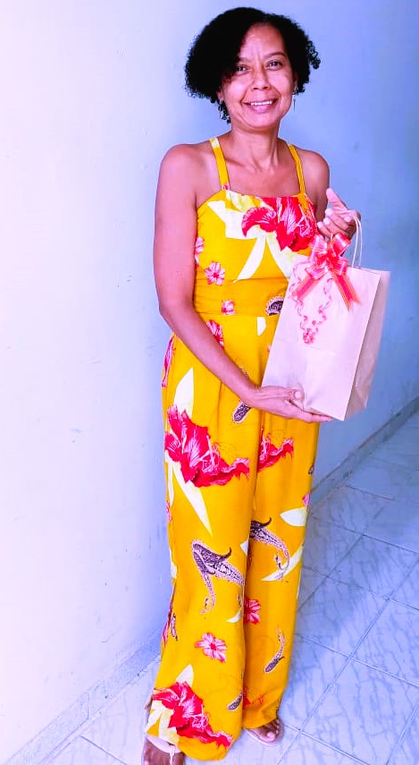

Jaciara Melo de Jesus Nogueira, mulher cis, negra, do interior, nasceu em Governador Mangabeira – Bahia, cidade na qual reside até hoje. Filha de Jandira Melo (em memória) e Rosalvo Coelho (em memória) e irmã de Jacira Melo, começou a trabalhar aos 14 anos, em uma loja de roupa na cidade citada. Depois de completar maior idade, passou a trabalhar na mesma filial de loja, mas agora em uma cidade vizinha chamada Muritiba-Ba.
Com 21 anos se casou com seu primeiro namorado Nelson Nunes Nogueira, com o qual é casada até hoje, com quem tem dois filhos, Náira Nogueira e Nadson Nogueira. Após romper com seu atual vínculo empregatício depois de 5 anos, ainda com seus filhos pequenos, viajava frequentemente para trabalhar por dois dias da semana em uma Lotérica na capital da Bahia, em Salvador.
No período ao qual não conseguia dar 100% da sua atenção para seus filhos, contava com a ajuda de sua avó, apelidada carinhosamente por Vovó Neném, sua mãe apelidada Vovó Nanga e sua irmã Jacira que também é apelidada de Jau.
Depois de algum tempo, conseguiu um trabalho em Governador Mangabeira, onde conseguiu ficar mais perto da família e acompanhar e cuidar da criação de seus filhos. Neste emprego permaneceu por mais 7 anos e pediu demissão pois o convívio com alguns colegas de trabalho estava insustentável.
Mas não ficou muito tempo desempregada, logo conseguiu emprego em uma rede de supermercado ainda em Governador Mangabeira. Nesse mesmo período começou a cursar o ensino superior na área de Serviço Social, no qual trabalhava durante o dia e estudava pela noite, período difícil e muito corrido, pois além dessas demandas ainda cumpria com o seu compromisso de dona de casa.
Hoje, próximo de completar 51 anos (data de nascimento 26 de abril de 1972), goza de beleza e autocuidado, sempre preocupada com sua saúde e muito elogiada por aparentar ser irmã da sua filha. Sustenta desde nova com muita luta e dedicação a sua família, sempre apoiando-os e incentivando-os a serem melhores. Muito amada por seus filhos e por seu esposo que não mede elogios ao se tratar da sua esposa, vive uma vida tranquila na mesma pequena cidade em que nasceu, cuidando das suas plantas e sua cadela de estimação, Aicha, considerada como filha.
Sua música!
Eu queria ter o dom de poder cantar
Igual aos pássaros que Deus fez pra viver
Livre pra voar
Nesse azul sem dimensão
Queria ter poder pra poder fazer
Você às vezes dizer sim ao invés do não
Pra fome, pra saúde, pra pobreza
Pra miséria, educação
Vou mudar
Um dia você mesmo vai dizer
Quem era, quem tu sois
É uma miragem, podes crer
Vou mudar
Um dia você mesmo vai se ver
Diante do espelho do poder
ESPELHO DO PODER (Letra) - Conde Só Brega
